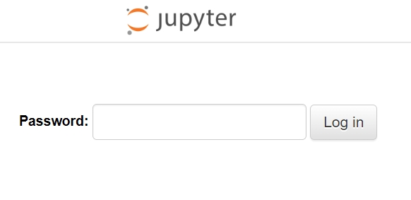

frp 是一个专注于内网穿透的高性能的反向代理应用，支持 TCP、UDP、HTTP、HTTPS 等多种协议，且支持 P2P 通信。可以将内网服务以安全、便捷的方式通过具有公网 IP 节点的中转暴露到公网。
# Ubuntu
# Centos
# 开放部分端口
阿里云安全组设置开启外部访问端口
下载对应frp版本
wget https://github.com/fatedier/frp/releases/download/v0.49.0/frp_0.49.0_linux_amd64.tar.gz
解压并修改配置文件
tar -xvf frp_0.49.0_linux_amd64.tar.gz
cd frp_0.49.0_linux_amd64/
## 服务器端设置frps.ini
vim frps.ini
## 设置选项，保存退出
[common]
bind_port = xxxx
dashboard_port = ####
dashboard_user = ####
dashboard_pwd = ####
## 后台运行
nohup ./frps -c ./frps.ini &
下载对应frp版本并解压
浏览器下载：https://github.com/fatedier/frp/releases/download/v0.49.0/frp_0.49.0_windows_amd64.zip
新建frpc.bat
路径：C:\ProgramData\Microsoft\Windows\Start Menu\Programs\StartUp\frpc.bat
编写自启动文件frpc.bat
cmd /c D:\Tools\FRP\frp_0.49.0_windows_amd64\frp_0.49.0_windows_amd64\frpc.exe -c D:\Tools\FRP\frp_0.49.0_windows_amd64\frp_0.49.0_windows_amd64\frpc.ini
添加配置选项
[common]
server_addr = 云服务器上的公网ip
server_port = xxxx （同上bind_port）
[RDP]
type = tcp
local_ip = 127.0.0.1
local_port = #### （本地开放端口）
remote_port = #### （外部可访问端口）
通过以上配置可以用于windows远程桌面连接，透过windows本身在的局域网。
miniconda下载，并通过sh执行，创建并初始化Conda环境。
(base)computer_name:path# pip install jupyter
jupyter notebook --generate-config
## 修改配置文件
vim /root/.jupyter/jupyter_notebook_config.py
c.#####.notebook_dir = "/path/to/file"
c.#####.password_required = True
c.#####.port = PPPP（需要在安全组和防火墙中开放端口）
c.#####.ip = xxx.xxx.xxx.xxx（阿里云服务器中的私有ip，公有ip用于外部访问，私有ip用于拉起服务）
## 配置jupyter notebook密码
jupyter notebook password
## 输入密码
Enter password: XXXXXX
## 开启服务
nohup jupyter notebook --allow-root &
浏览器输入 ：http://服务器公网ip:PPPP

密码输入（同Enter password）。